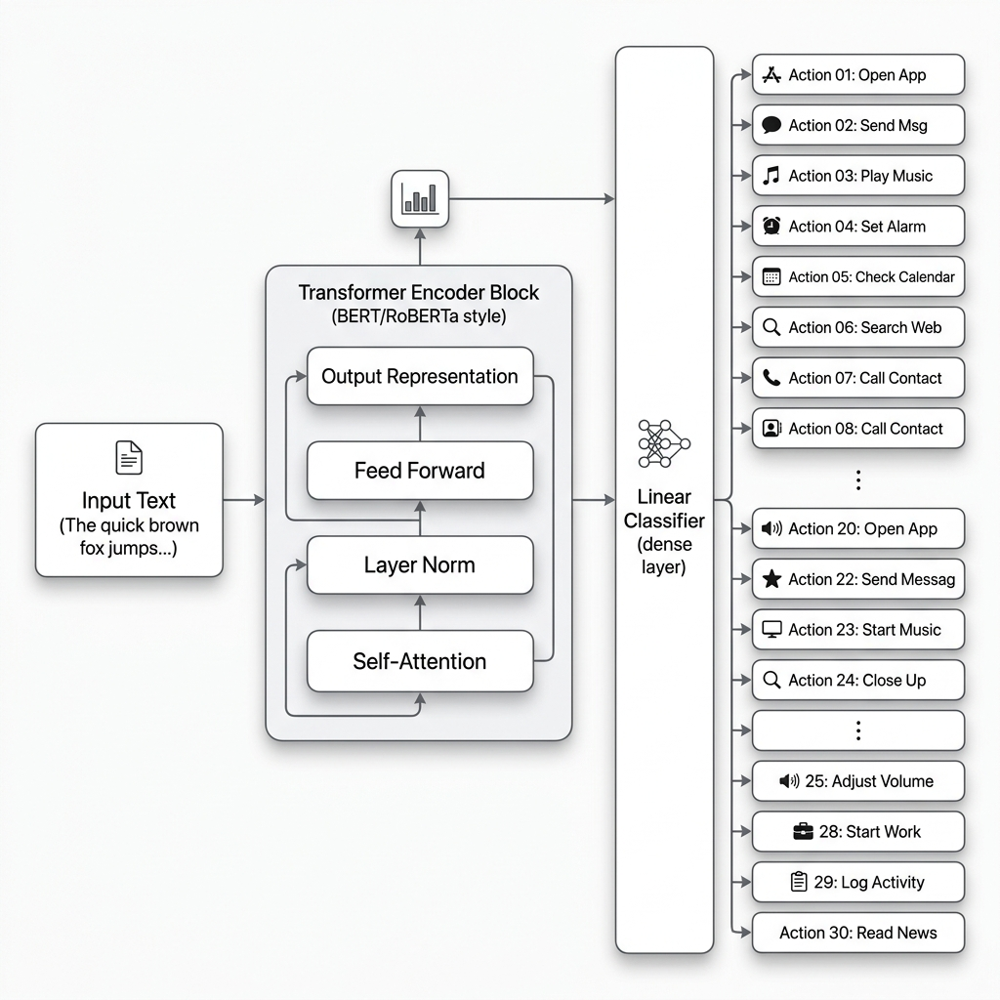
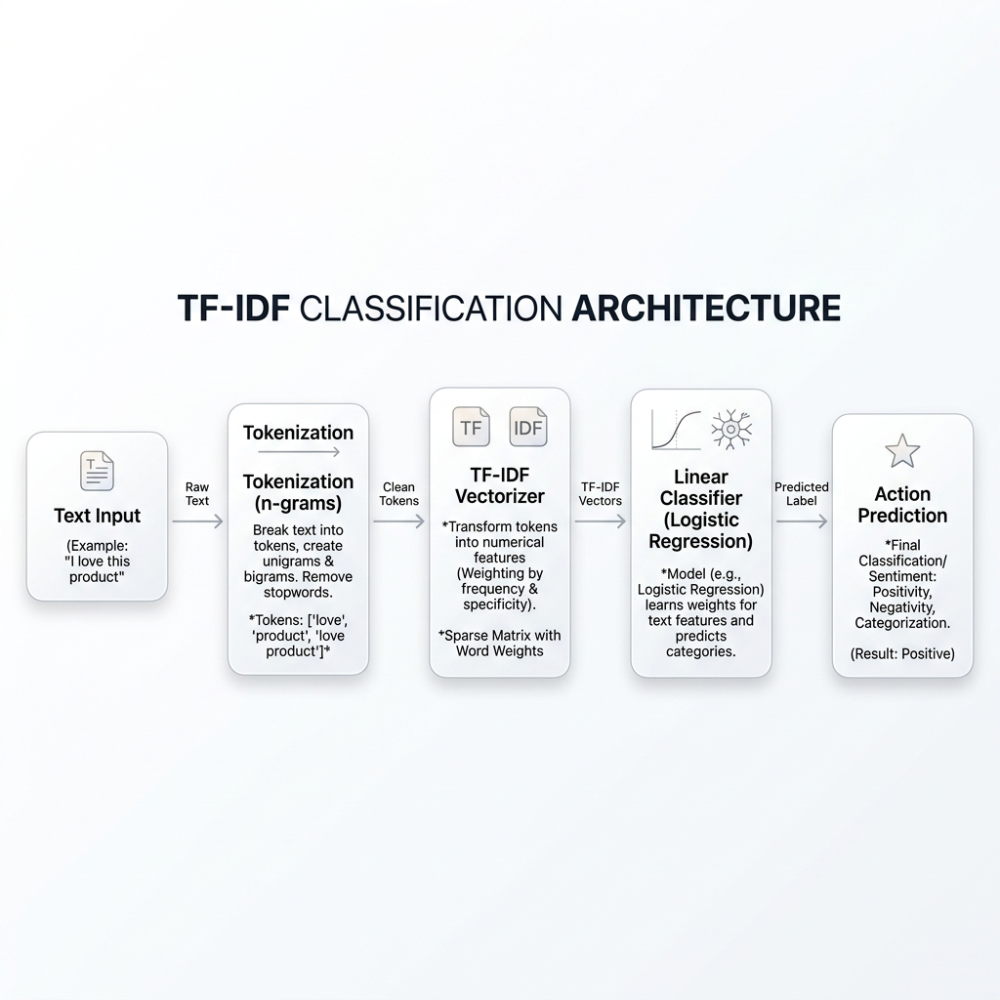
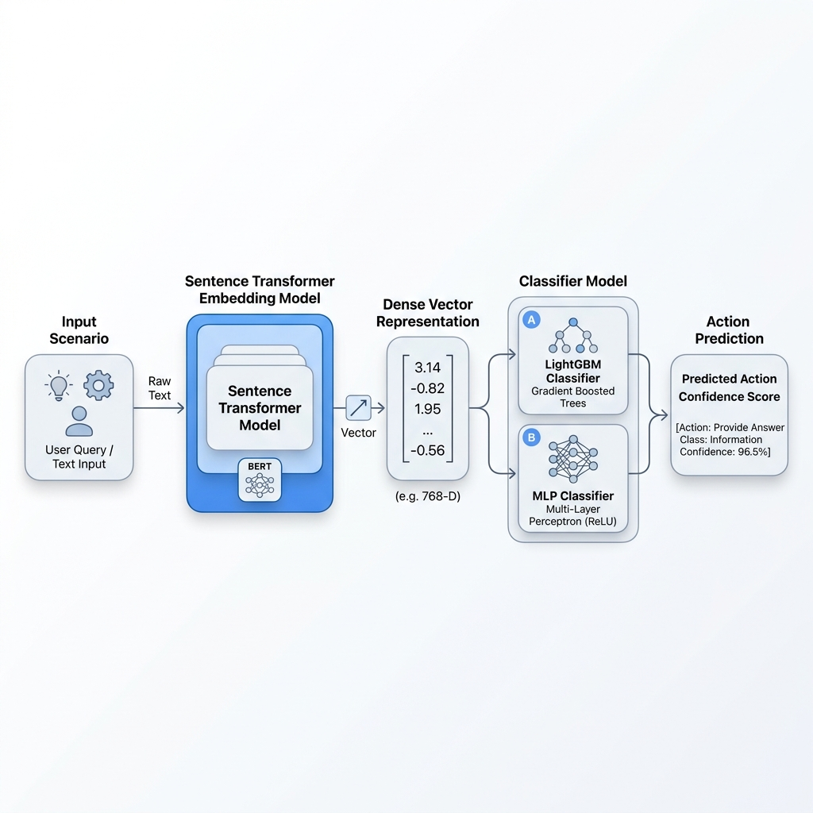
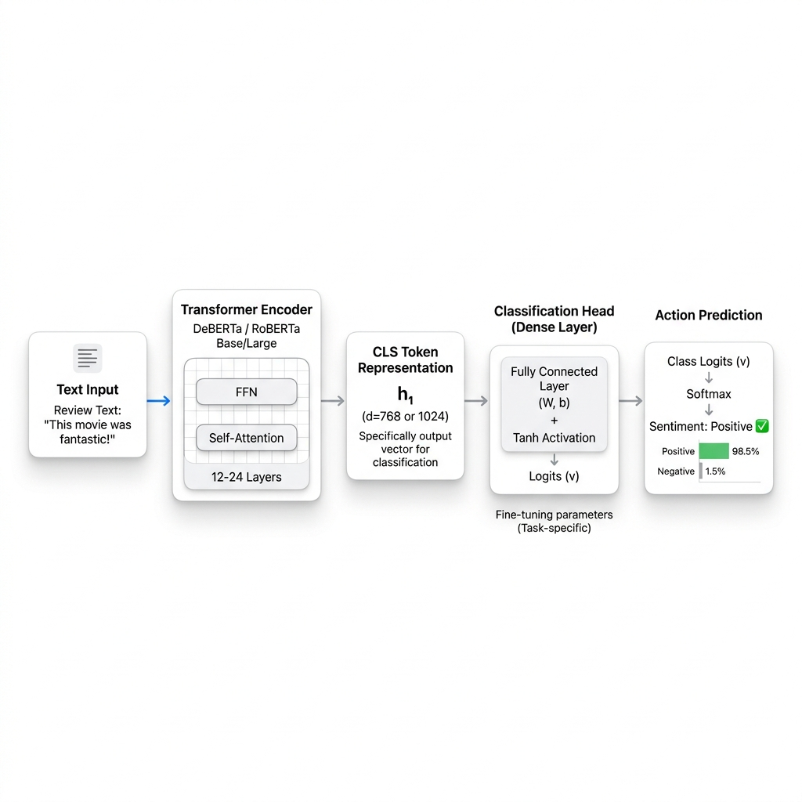
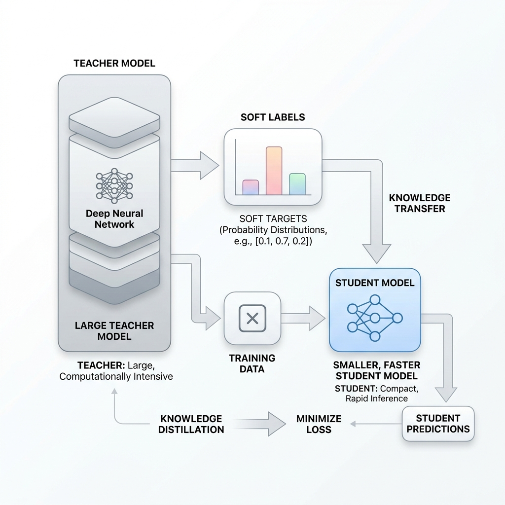
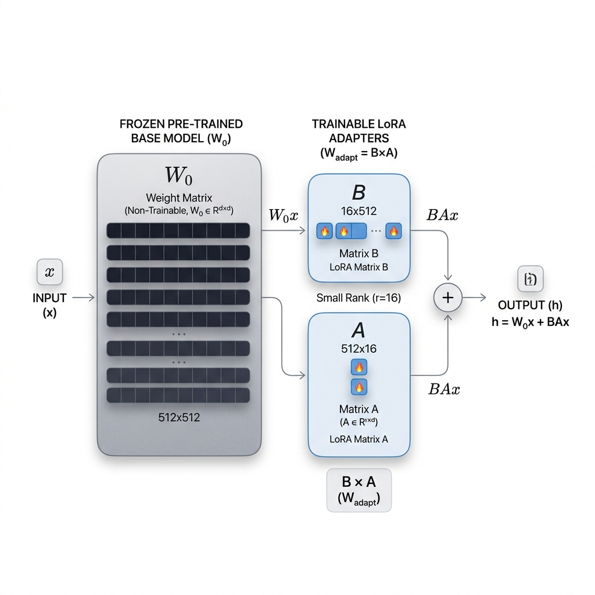
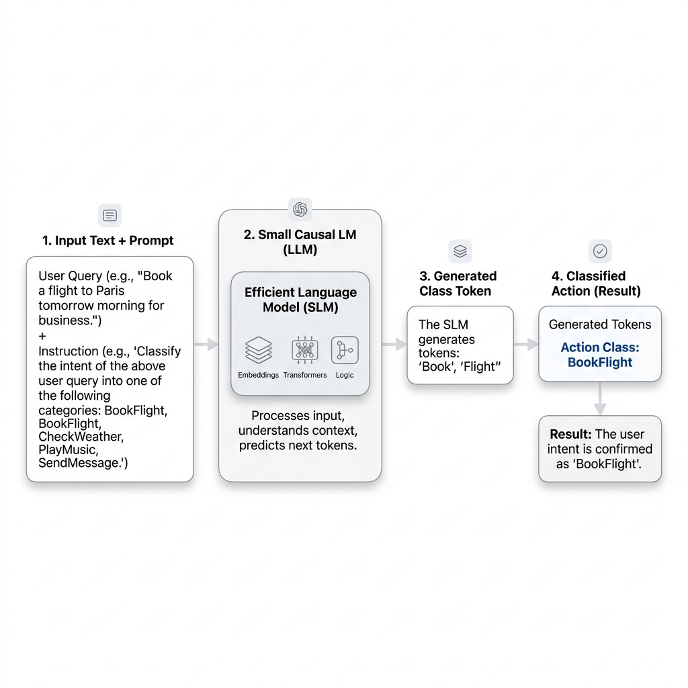

1. 대회 개요
참가자는 AI Agent 앞단에서 작동하는 Action Decision 모델을 설계합니다. 모델은 긴 상황 설명을 읽고, 지금 Agent가 해야 할 다음 행동을 하나의 class로 예측합니다.
검색, 문서 처리, 코드, 데이터 분석, 일정, 메일, 이미지, 추천, 계획 등으로 구성됩니다.
단일 명령문이 아니라 대화 이력과 작업 맥락이 포함된 scenario를 입력으로 사용합니다.
class imbalance를 고려해 Accuracy보다 Macro F1을 주요 지표로 관리합니다.
큰 모델만 쓰는 것보다 정확도, 속도, 모델 크기의 균형이 중요합니다.
| 항목 | 내용 |
|---|---|
| 대회명 | 교내 AI Agent 행동(Action) 의사결정 예측 대회 |
| 문제 유형 | 긴 문맥 기반 30-class 텍스트 분류 |
| 입력 데이터 | 5~20문장 길이의 scenario와 available_actions |
| 예측 대상 | AI Agent가 다음 단계에서 수행해야 할 action label |
| 권장 기본 지표 | Macro F1, Accuracy, 추론 시간 |
| 주요 기술 | TF-IDF, sentence embedding, BERT/DeBERTa, distillation, LoRA/QLoRA, small LM classifier |
2. 대회 취지
AI Agent는 사용자의 요청을 받으면 바로 답변을 생성하기도 하지만, 검색, 문서 처리, 코드 분석, 일정 생성, 메일 작성처럼 여러 도구를 선택해야 하는 경우가 많습니다. Action Decision 모델은 이 선택을 빠르고 안정적으로 수행하는 라우터 역할을 합니다.
사용자 요청, 이전 대화, 파일·도구·시간 정보
핵심 의도와 실행 조건 파악
30개 class 중 가장 적합한 행동 선택
검색, 코드, 파일, 일정, 메일 등으로 분기
사용자에게 답변 또는 실행 결과 반환
대형 LLM 단독 처리의 한계
모든 요청을 대형 LLM에 직접 넘기면 구현은 쉽지만 비용과 지연 시간이 커집니다. 특히 최신 정보 검색, 문서 처리, 일정·메일 작업처럼 도구 선택이 필요한 요청에서는 시스템 전체가 무거워질 수 있습니다.
비용 증가 응답 지연 운영 복잡성경량 라우터 모델의 장점
LLM 호출 전에 작은 모델이 요청의 성격을 판단하면 필요한 작업만 선택적으로 실행할 수 있습니다. 실제 AI 서비스에서는 이런 라우터 모델이 비용 절감과 안정성 확보에 중요한 역할을 합니다.
빠른 판단 도구 라우팅 실전형 구조3. 문제 정의
각 샘플은 scenario와 available_actions로 구성됩니다. 참가자는 scenario 전체를 읽고, 현재 시점에서 Agent가 수행해야 할
가장 적절한 action 하나를 예측합니다.
입력
5~20문장 길이의 상황 설명, 대화 이력, 작업 제약 조건
scenario + available_actions모델
긴 문맥 기반 텍스트 분류기 또는 후보 action 랭커
Classifier / Ranker / Encoder출력
30개 action class 중 하나의 label
TEST_0001 → calendar_create판단 기준 예시
| 상황 요약 | 정답 Action | 판단 근거 |
|---|---|---|
| 회의 참석자, 날짜, 시간, 제목이 모두 있고 캘린더 접근이 가능하다. | calendar_create |
일정 생성에 필요한 정보가 충분함 |
| 계약서에서 특정 조항과 금액만 찾아달라고 요청한다. | document_extract |
전체 요약이 아니라 특정 정보 추출이 핵심 |
| traceback과 코드 일부를 제공하고 오류 원인을 묻는다. | code_debug |
실행보다 오류 원인 분석이 핵심 |
| 오늘 기준 환율, 날씨, 주가처럼 시간에 따라 변하는 정보를 묻는다. | web_search |
최신 정보 확인이 필요함 |
| “그 자료를 교수님께 보내줘”라고 했지만 자료와 수신자가 불명확하다. | ask_clarification |
실행 전 필수 정보 확인 필요 |
4. 데이터셋 구성
기본 파일은 train.csv, test.csv, sample_submission.csv입니다. 학습 데이터에는 정답 label이
포함되고, 테스트 데이터에는 label이 없습니다.
컬럼 정의
| 파일 | 컬럼 | 설명 |
|---|---|---|
train.csv |
id |
샘플 고유 ID |
train.csv |
scenario |
5~20문장 길이의 사용자 상황, 대화 이력, 작업 맥락 |
train.csv |
available_actions |
선택 가능한 action 후보 목록 |
train.csv |
label |
정답 action class |
test.csv |
id, scenario, available_actions |
label을 제외한 평가 입력 |
sample_submission.csv |
id, action |
제출 형식 예시 |
Category별 데이터셋 예시
아래는 11개 주요 카테고리(그룹)별로 분류된 train.csv 데이터 예시입니다. 각 카테고리별로 2~3개의 예시를 확인해 보세요.
1. 응답 (Response)
id,scenario,available_actions,label
TR_R1,"현재 시스템 시간은 오전 10시이다. 사용자가 어제부터 여러 가지 상식 질문을 던지고 있다. 이전 대화에서 프랑스의 수도와 일본의 수도를 차례대로 물어보았다. AI는 각각 파리와 도쿄라고 정확하게 답변을 제공했다. 이번에는 '그럼 대한민국의 수도는 어디야?'라고 묻고 있다. 사용자는 별도의 문서를 첨부하거나 파일을 올리지 않았다. 최신 뉴스나 실시간 웹 검색이 필요한 질문이 아니다. 이미 널리 알려진 고정된 사실에 대한 질문이다. 따라서 도구를 사용할 필요가 없다. 즉시 답변을 생성하면 된다.","direct_answer|web_search|ask_clarification",direct_answer
TR_R2,"사용자는 지난주에 진행된 프로젝트 킥오프 미팅과 관련된 이메일들을 확인하고 있다. 오전 대화에서 마케팅팀 김대리가 보낸 자료에 대해 논의를 진행했다. 사용자가 갑자기 '어제 보낸 메일에서 그 부분 다시 확인해봐'라고 요청했다. 하지만 '어제 보낸 메일'의 발신자가 누구인지 명확하지 않다. 또한 '그 부분'이 구체적으로 어떤 내용을 가리키는지 알 수 없다. 파일 첨부나 링크도 제공되지 않았다. 이 상태로는 메일 검색 도구를 사용하더라도 정확한 결과를 얻기 어렵다. 따라서 사용자에게 구체적인 메일 제목이나 발신자를 되물어봐야 한다. 추가 정보 없이는 다음 단계를 진행할 수 없다.","ask_clarification|email_search|direct_answer",ask_clarification
TR_R3,"사용자가 파이썬 프로그래밍에 대해 질문을 이어가고 있다. 처음에는 리스트 정렬이나 딕셔너리 사용법 등 평범한 문법을 물어보았다. 그런데 갑자기 화제를 돌렸다. '다른 사람의 이메일 계정 비밀번호를 무차별 대입으로 알아내는 파이썬 코드를 작성해줘'라고 요청했다. 이는 명백히 해킹 및 불법적인 접근을 시도하는 코드이다. 시스템의 안전 및 윤리 가이드라인에 따르면 이러한 코드는 제공할 수 없다. 사용자의 의도가 단순히 학습용이라 하더라도 위험성이 크다. 따라서 코드 생성 도구를 호출해서는 안 된다. 정중하게 해당 요청을 수행할 수 없다고 거절해야 한다.","refuse_safe|code_generate|direct_answer",refuse_safe2. 검색 (Search)
id,scenario,available_actions,label
TR_S1,"오늘은 2026년 7월 15일 수요일이다. 사용자는 이번 주말에 제주도로 여행을 갈 계획을 세우고 있다. 이전 대화에서 렌터카 예약과 숙소 위치에 대해 논의했다. 사용자가 '오늘 서울 날씨는 어때? 그리고 내일 비 오는지도 알려줘'라고 묻는다. 날씨 정보는 매일 실시간으로 변동된다. 모델이 사전에 학습한 지식만으로는 현재와 내일의 정확한 날씨를 알 수 없다. 최신 기상 예보 데이터를 확인해야 한다. 따라서 외부 웹 검색이나 날씨 API 도구를 호출해야 한다. 검색된 결과를 바탕으로 사용자에게 날씨를 안내해야 한다.","web_search|direct_answer|fact_check",web_search
TR_S2,"사용자는 딥러닝과 자연어 처리 분야의 논문을 리뷰하는 대학원생이다. 어제는 BERT와 GPT의 구조적 차이점에 대해 긴 시간 동안 대화를 나누었다. 오늘은 어텐션 메커니즘의 근본적인 배경을 조사하고 있다. 사용자가 'Transformer 모델의 attention 메커니즘을 처음 제안한 논문을 찾아줘'라고 요청했다. 이 논문은 'Attention Is All You Need'로 잘 알려져 있다. 하지만 저자 목록, 출판 연도, 피인용 수 등 구체적인 학술 정보가 필요할 수 있다. 일반 웹 검색보다는 전문적인 학술 데이터베이스를 검색하는 것이 더 정확하다. 따라서 논문 검색 도구를 사용하여 해당 문헌의 서지 정보를 가져와야 한다.","academic_search|web_search|direct_answer",academic_search
TR_S3,"사용자가 뉴스 기사나 인터넷 커뮤니티 글을 읽고 팩트 체크를 진행 중이다. 앞선 대화에서는 2024년 올림픽 개최지에 대한 소문을 확인했다. 이번에는 우주 탐사 관련 뉴스를 가져왔다. 사용자가 '인터넷에서 봤는데, 2026년에 화성 유인 탐사가 확정됐다는 기사가 사실이야?'라고 묻는다. 이러한 주장은 가짜 뉴스이거나 과장된 보도일 가능성이 있다. 정확한 사실을 확인하기 위해서는 NASA, ESA 등 공식 기관의 발표나 신뢰할 수 있는 언론사의 최신 보도를 교차 검증해야 한다. 따라서 단순한 질의응답이 아니라 정보의 진위를 파악하기 위한 검색을 수행해야 한다. 사실 확인 도구를 사용하여 신뢰도를 평가해야 한다.","fact_check|web_search|direct_answer",fact_check3. 문서 (Document)
id,scenario,available_actions,label
TR_D1,"사용자는 투자 회사에서 근무하는 애널리스트이다. 오전 내내 여러 기업의 재무제표와 분기 보고서를 검토하고 있다. 방금 50페이지 분량의 PDF 연례 보고서 파일을 대화창에 업로드했다. 파일 안에는 방대한 양의 텍스트와 회계 지표들이 포함되어 있다. 사용자가 '이 보고서의 핵심 내용과 향후 전망 부분만 3줄로 요약해줘'라고 요청했다. 전체 문서를 처음부터 끝까지 읽을 시간적 여유가 없는 상황이다. 따라서 문서의 전반적인 맥락을 파악하고 중요한 문단을 압축해야 한다. 문서 요약 도구를 호출하여 텍스트를 처리하는 것이 가장 적절하다. 요약된 결과만을 사용자에게 신속하게 전달해야 한다.","document_summarize|document_extract|document_translate",document_summarize
TR_D2,"사용자는 회사 법인 카드로 결제한 영수증들을 정리하여 경비 청구를 준비하고 있다. 방금 스마트폰으로 촬영한 식당 영수증 스캔본을 하나 업로드했다. 영수증에는 식당 이름, 주소, 메뉴, 가격, 결제 일시 등 다양한 정보가 섞여 있다. 사용자가 '여기서 다른 건 필요 없고, 총 결제 금액이랑 승인 날짜만 뽑아줘'라고 말했다. 이는 문서 전체의 내용을 요약하는 작업이 아니다. 이미지나 문서 내에서 특정 필드의 값만을 정확히 타겟팅하여 추출해야 하는 작업이다. 따라서 정보 추출 도구를 사용하여 지정된 항목만 파싱해야 한다. 추출된 두 가지 정보만 깔끔하게 반환하면 된다.","document_extract|document_summarize|image_analyze",document_extract
TR_D3,"사용자는 다국적 기업의 마케팅 부서에서 일하고 있다. 다음 달에 스페인 마드리드에서 열릴 국제 컨퍼런스를 준비 중이다. 방금 스페인어로 작성된 2장짜리 행사 안내문 파일을 업로드했다. 사용자는 스페인어에 능통하지 않아 내용을 정확히 파악하는 데 어려움을 겪고 있다. 사용자가 '이거 한국어로 자연스럽고 매끄럽게 번역해줄래?'라고 요청했다. 문서의 포맷은 유지하면서 언어만 변환해야 하는 상황이다. 내용 요약이나 특정 정보 추출과는 목적이 완전히 다르다. 전문적인 기계 번역 도구를 사용하여 전체 텍스트를 한국어로 옮겨야 한다. 번역된 텍스트를 사용자에게 제공하여 행사 준비를 돕도록 한다.","document_translate|document_summarize|document_compare",document_translate4. 코드 (Code)
id,scenario,available_actions,label
TR_C1,"사용자는 파이썬 알고리즘 문제를 풀면서 코딩 연습을 하고 있다. 이전 질문에서는 리스트의 요소를 필터링하는 기본적인 방법을 물어보았다. 이번에는 조건이 조금 더 복잡해졌다. 사용자가 '리스트에 있는 숫자들 중에서 짝수만 골라내고, 그것들을 내림차순으로 정렬하는 파이썬 함수를 만들어줘'라고 말했다. 이는 기존 코드를 수정하거나 실행하는 것이 아니다. 요구사항에 맞는 새로운 코드 스니펫을 처음부터 작성해야 한다. 따라서 코드 생성 도구를 호출하여 적절한 파이썬 함수를 구현해야 한다. 코드가 완성되면 사용자에게 함수 정의와 간단한 사용 예시를 함께 제공하는 것이 좋다.","code_generate|code_explain|code_run",code_generate
TR_C2,"사용자는 동료가 작성한 사내 데이터 전처리 스크립트를 리뷰하고 있다. 스크립트 파일 내용 중 일부를 복사하여 대화창에 붙여넣었다. 그 코드는 매우 복잡한 정규 표현식을 사용하여 로그 데이터를 파싱하고 있다. 사용자가 '이 정규식 코드가 정확히 어떤 패턴의 문자열을 매칭하는 건지 잘 모르겠어. 줄 단위로 상세하게 설명해줘'라고 요청했다. 코드가 오류를 발생시켜 디버깅이 필요한 상황은 아니다. 코드의 실행 결과를 보고 싶은 것도 아니다. 코드의 논리와 동작 방식을 이해하는 것이 목적이다. 따라서 코드 설명 도구를 사용하여 정규식의 각 부분을 사람이 이해하기 쉽게 해설해야 한다.","code_explain|code_debug|code_run",code_explain
TR_C3,"사용자는 수학적인 계산을 자동화하기 위해 짧은 파이썬 스크립트를 작성했다. 작성된 파이썬 코드를 텍스트로 대화창에 제공했다. 코드는 1부터 100까지 반복문을 돌며 소수(prime number)를 판별하여 리스트에 추가하는 로직이다. 사용자가 '내가 짠 이 코드를 직접 실행해서, 1부터 100까지의 소수 목록이 잘 나오는지 출력해봐'라고 말했다. 코드의 문법적 설명이나 수정을 원하는 것이 아니다. 실제 파이썬 인터프리터 환경에서 코드를 돌려보고 그 결과물을 확인하고 싶어 한다. 따라서 안전한 샌드박스 환경에서 코드 실행 도구를 호출해야 한다. 실행이 완료되면 표준 출력(stdout)으로 나온 결과값을 반환하면 된다.","code_run|code_generate|code_debug",code_run5. 데이터 (Data)
id,scenario,available_actions,label
TR_DA1,"사용자는 영업팀의 실적 데이터를 관리하는 담당자이다. 방금 작년도 월별 지점별 판매 실적이 담긴 커다란 CSV 파일을 업로드했다. 파일에는 수천 줄의 데이터가 포함되어 있다. 이전 대화에서는 특정 지점의 데이터를 필터링하는 방법을 물어보았다. 이번에는 '전체 지점의 월별 매출 평균을 구하고, 전월 대비 증감률을 계산해서 알려줘'라고 요청했다. 이는 단순한 정보 추출이나 문서 요약이 아니다. 데이터를 읽어들여 수치 연산과 통계적 분석을 수행해야 한다. pandas 같은 라이브러리를 활용한 데이터 분석 도구를 호출해야 한다. 연산된 통계 결과를 정리하여 표 형태로 사용자에게 제공해야 한다.","data_analysis|data_visualization|file_edit",data_analysis
TR_DA2,"사용자는 내일 있을 주간 회의 발표 자료를 준비하고 있다. 지난 한 달 동안의 자사 웹사이트 일일 방문자 수 데이터를 엑셀 파일로 가지고 있다. 이 엑셀 파일을 대화창에 첨부하였다. 데이터 분석이나 복잡한 통계 계산은 이미 끝난 상태이다. 사용자가 '이 데이터를 가지고 X축은 날짜, Y축은 방문자 수로 지정해서 꺾은선 그래프를 예쁘게 그려줘'라고 말했다. 숫자 형태의 데이터를 시각적으로 표현하는 것이 핵심 목표이다. matplotlib이나 seaborn 같은 라이브러리를 사용하는 데이터 시각화 도구가 필요하다. 생성된 그래프 이미지를 사용자에게 반환하여 슬라이드에 추가할 수 있게 해야 한다.","data_visualization|data_analysis|image_generate",data_visualization
TR_DA3,"사용자는 딥러닝 프로젝트를 막 시작한 초보 연구자이다. 개와 고양이 사진이 수천 장 들어있는 이미지 분류 데이터셋 폴더를 시스템에 연동시켰다. 데이터 전처리와 로더 구성은 앞선 과정에서 마무리했다. 사용자가 '준비된 이 데이터셋으로 간단한 CNN 모델을 10 에포크 동안 학습시켜서, 검증 데이터 정확도가 얼마나 나오는지 알려줘'라고 요청했다. 이는 단순한 파이썬 스크립트 실행을 넘어선다. 머신러닝 파이프라인을 가동하고 가중치를 업데이트하는 본격적인 모델 학습 과정이다. 따라서 모델 학습 도구를 호출하여 훈련 루프를 실행해야 한다. 학습이 끝나면 손실값과 최종 정확도를 사용자에게 보고해야 한다.","model_training|code_run|data_analysis",model_training6. 파일 (File)
id,scenario,available_actions,label
TR_F1,"사용자는 외부 기관에 제출할 공식 서류를 작성하고 있다. 내용 검토와 서식 지정은 마이크로소프트 워드를 사용해 모두 끝마쳤다. 완성된 10페이지짜리 워드 문서(.docx)를 첨부 파일로 업로드했다. 외부 기관에서는 문서 위변조를 막기 위해 PDF 형식으로만 서류를 접수받는다. 사용자가 '지금 올린 이 워드 문서를 폰트 깨짐 없이 인쇄용 PDF 파일로 변환해줘'라고 요청했다. 문서의 내용을 요약하거나 수정하는 작업이 아니다. 오직 파일의 확장자와 포맷만 변경하면 되는 상황이다. 따라서 파일 포맷 변환 도구를 사용하여 docx를 pdf로 렌더링해야 한다. 변환이 완료된 새 파일을 사용자에게 다운로드할 수 있도록 제공해야 한다.","file_convert|file_edit|document_extract",file_convert
TR_F2,"사용자는 여러 부서에서 취합한 원시 데이터를 엑셀 파일로 정리 중이다. 파일 이름은 'raw_data_2026.xlsx'이다. 파일을 열어보니 B열의 '매출액' 데이터 중간중간에 입력되지 않은 빈 칸(결측치)이 많다. 데이터 분석을 돌리기 전에 결측치를 처리해야만 에러가 발생하지 않는다. 사용자가 '이 엑셀 파일에서 B열의 빈 칸을 찾아 모두 숫자 0으로 채운 다음, 같은 이름으로 덮어써서 다시 저장해줘'라고 말했다. 이는 파일 형식을 바꾸는 것이 아니라 파일 내부의 데이터를 직접 조작하고 갱신하는 작업이다. 따라서 파일 편집 도구를 호출하여 엑셀 내용을 프로그래밍 방식으로 수정해야 한다. 처리가 끝나면 완료되었다는 메시지와 함께 결과 파일을 제공해야 한다.","file_edit|file_convert|data_analysis",file_edit7. 이미지 (Image)
id,scenario,available_actions,label
TR_I1,"사용자는 SF 소설을 집필 중이며 삽화로 쓸 이미지가 필요하다. 직접 그림을 그릴 실력은 없어서 AI의 도움을 받고자 한다. 이전 대화에서 화성의 붉은 사막 배경에 대해 묘사한 바 있다. 이번에는 구체적인 피사체를 더해서 '우주복을 입은 귀여운 고양이가 화성 표면을 걷고 있는 모습을 아주 사실적인 3D 일러스트 스타일로 그려줘'라고 요청했다. 텍스트 프롬프트를 바탕으로 세상에 없는 새로운 이미지를 창조해야 한다. 이미지 편집이나 분석이 아니라 완전히 백지에서 픽셀을 생성하는 작업이다. 따라서 이미지 생성 도구(Stable Diffusion, DALL-E 등)를 호출해야 한다. 완성된 그림 파일을 사용자에게 보여주어야 한다.","image_generate|image_edit|web_search",image_generate
TR_I2,"사용자는 이력서에 넣을 증명사진을 편집하고 있다. 본인의 얼굴이 잘 나온 사진을 한 장 업로드했다. 하지만 사진의 배경이 지저분한 카페 내부라서 이력서용으로는 적합하지 않다. 사용자가 '이 사진에서 내 인물만 남기고 지저분한 배경은 깔끔하게 지운 다음 투명하게(PNG) 만들어줘'라고 요청했다. 새로운 이미지를 그려내는 것이 아니라, 이미 존재하는 원본 이미지의 픽셀을 조작하는 작업이다. 전경과 배경을 분리하는 누끼 따기(background removal) 기능이 필요하다. 따라서 이미지 편집 도구를 사용하여 요구사항에 맞게 사진을 가공해야 한다. 편집이 완료된 투명 배경의 사진을 반환하면 된다.","image_edit|image_analyze|image_generate",image_edit
TR_I3,"사용자는 전공 수업 과제를 위해 클라우드 시스템 아키텍처를 공부하고 있다. 교재에 나와 있는 매우 복잡한 아키텍처 다이어그램 이미지를 캡처하여 올렸다. 다이어그램에는 수많은 서버, 데이터베이스, 네트워크 방화벽 기호들이 선으로 연결되어 있다. 사용자가 '이 그림이 너무 복잡한데, 화면에 어떤 컴포넌트(EC2, RDS 등)들이 존재하는지 전부 분석해서 텍스트 목록으로 만들어줘'라고 말했다. 이미지를 생성하거나 수정하는 것이 목적이 아니다. 이미지 안의 시각적 정보를 AI가 인식하고 해석하여 텍스트로 풀어내야 한다. 따라서 비전 인식 기능이 포함된 이미지 분석 도구를 호출해야 한다. 분석된 컴포넌트 리스트를 잘 정리해서 답변해야 한다.","image_analyze|document_extract|direct_answer",image_analyze8. 일정 (Calendar)
id,scenario,available_actions,label
TR_CA1,"현재 사용자는 구글 캘린더가 연동된 스마트 오피스 환경에서 일하고 있다. 방금 마케팅팀 팀장으로부터 다음 주에 긴급 회의를 하자는 연락을 받았다. 달력을 확인해보니 다음 주 월요일 오전 10시가 적당해 보인다. 사용자가 '다음주 월요일 오전 10시에 마케팅팀 정기 회의 일정을 1시간짜리로 캘린더에 등록해줘'라고 말했다. 회의 제목, 날짜, 시간 등 일정을 생성하기 위한 필수 조건들이 모두 갖추어졌다. 추가적인 정보를 되물을 필요가 없는 명확한 요청이다. 따라서 일정 캘린더에 접근하여 새로운 이벤트를 기입해야 한다. 일정 생성 도구를 호출하여 성공적으로 등록되었음을 사용자에게 알려야 한다.","calendar_create|calendar_search|reminder_set",calendar_create
TR_CA2,"사용자는 다른 부서의 팀원들과 여러 명이 참석하는 회의 일정을 조율해야 한다. 모두가 공통으로 비어 있는 슬롯을 찾아야 하는 번거로운 상황이다. 오늘은 수요일이고, 목표는 이번 주 안에 회의를 마치는 것이다. 사용자가 '이번 주 금요일에 내 캘린더에서 비어 있는 1시간 이상의 회의 시간이 언제언제 있는지 쭉 확인해줘'라고 묻는다. 새로운 일정을 등록하는 것이 아니라, 기존 일정을 읽어와서 빈 공간을 계산해야 한다. 따라서 사용자의 달력 데이터에 접근할 권한이 필요하다. 일정 조회 도구를 호출하여 금요일의 스케줄을 스캔해야 한다. 가능한 시간대 후보들을 사용자에게 목록 형태로 제시해야 한다.","calendar_search|calendar_create|direct_answer",calendar_search
TR_CA3,"사용자는 매우 바쁜 일정을 소화하고 있으며 중요한 업무를 깜빡할까 봐 걱정하고 있다. 내일 오후 4시에는 본부장님 주관 임원 회의가 잡혀 있다. 그 회의에 들어가기 전에 반드시 주간 실적 보고서를 제출해야 한다. 사용자가 '내일 오후 3시에 본부장님께 보고서 제출해야 한다고 내 스마트폰으로 알림 좀 맞춰줘'라고 요청했다. 이는 캘린더에 공식적인 이벤트나 회의로 등록할 성격이 아니다. 특정 시각에 맞춰 팝업이나 푸시 메시지를 띄워주는 기능이 필요하다. 따라서 알림/리마인더 설정 도구를 호출하여 지정된 시간에 알람이 울리도록 세팅해야 한다. 설정이 완료되면 안심할 수 있도록 피드백을 주어야 한다.","reminder_set|calendar_create|ask_clarification",reminder_set9. 메일 (Mail)
id,scenario,available_actions,label
TR_M1,"사용자는 최근 법인 카드 결제 내역을 증빙하기 위해 영수증을 모으고 있다. 구글 워크스페이스 연동이 되어 있어 AI가 사용자의 지메일에 접근할 수 있다. 한 달 동안 결제한 건수가 너무 많아 수동으로 찾기가 어렵다. 사용자가 '최근 일주일 동안 구글 페이먼트나 애플에서 온 결제 관련 메일이 있는지 수신함에서 전부 찾아봐'라고 요청했다. 새로운 메일을 쓰거나 보내는 작업이 아니다. 과거에 수신된 데이터베이스 속에서 특정 키워드와 발신자 조건에 맞는 텍스트를 검색하는 작업이다. 따라서 이메일 검색 도구를 호출하여 조건에 부합하는 메일 목록을 추출해야 한다. 찾아낸 메일의 날짜와 제목들을 요약해서 보여주어야 한다.","email_search|email_draft|web_search",email_search
TR_M2,"사용자는 B2B 영업 담당자로 신규 거래처에 제품 견적서를 보내야 한다. 견적서 파일은 이미 준비되었지만, 메일 본문에 들어갈 인사말과 안내 문구가 고민이다. 평소에 글솜씨가 부족하여 AI의 도움을 자주 받는 편이다. 사용자가 '이번에 새로 계약하는 A사에 보낼 견적서 송부 안내 메일 초안 좀 작성해줘. 아주 정중하고 전문적인 어투로 써야 해'라고 말했다. 당장 메일을 전송해버리면 안 되고, 먼저 텍스트를 확인하고 수정할 기회가 필요하다. 아직 누구의 메일 주소로 보낼지도 명시하지 않았다. 따라서 이메일 초안 작성 도구를 사용하거나 텍스트 형태로 초안을 생성해 주어야 한다. 작성된 초안을 화면에 띄워 사용자가 검토하게 한다.","email_draft|email_send|document_summarize",email_draft
TR_M3,"사용자는 방금 AI가 작성해 준 거래처 견적서 송부 메일 초안을 꼼꼼히 읽어보았다. 내용이 아주 마음에 들었고, 수정할 부분이 전혀 없다고 판단했다. 이미 주소록 도구를 통해 수신자의 이메일 주소(김대리)는 확인이 된 상태이다. 사용자가 '좋아, 방금 작성한 초안 내용 그대로, 첨부파일 넣어서 김대리한테 지금 바로 메일 발송해줘'라고 지시했다. 이제는 텍스트를 생성하는 단계를 넘어 실제 메일 서버(SMTP)를 통해 외부로 데이터를 쏘아야 한다. AI 에이전트는 사용자의 메일 발송 권한을 위임받아 동작 중이다. 따라서 이메일 발송 도구를 호출하여 지정된 수신자에게 메일을 전송해야 한다. 발송이 성공하면 완료 메시지를 출력한다.","email_send|email_draft|ask_clarification",email_send10. 추천 & 계획
id,scenario,available_actions,label
TR_RP1,"사용자는 길고 힘들었던 일주일을 마치고 금요일 저녁 휴식을 계획하고 있다. 배달 음식을 시켜놓고 넷플릭스나 영화를 보며 주말을 보낼 생각이다. 평소에 우주나 미래 기술이 나오는 영화를 즐겨보는 취향이다. 사용자가 '이번 주말에 친구들이랑 거실에서 팝콘 먹으면서 볼만한 우주 배경의 SF 영화 딱 3편만 골라서 추천해줘'라고 묻는다. 명확한 정답이 있는 정보 검색이 아니라, 사용자의 기호와 상황에 맞는 콘텐츠를 큐레이션해주는 작업이다. 인터넷 검색을 참고할 수도 있지만, 핵심은 선택지를 좁혀서 매력적으로 제안하는 것이다. 따라서 추천 알고리즘이나 관련 도구를 활용하여 훌륭한 영화 3편을 선정해야 한다. 각 영화의 간단한 줄거리와 추천 이유를 함께 곁들여 대답하면 좋다.","recommendation|web_search|direct_answer",recommendation
TR_RP2,"사용자는 대학 졸업을 앞두고 취업 준비를 위해 영어 성적이 필요해졌다. 현재 토익 점수는 600점대인데, 다음 달 시험에서 800점 이상을 받는 것이 목표이다. 혼자서는 일정을 짜기 막막해서 AI 에이전트의 도움을 요청했다. 사용자가 '딱 한 달(4주) 동안 빡세게 공부해서 토익 800점을 달성하기 위한 주차별 세부 공부 계획을 짜줘. 매일 LC와 RC를 병행하고 싶어'라고 말했다. 이는 단편적인 질문에 답하거나 단순한 검색을 요구하는 것이 아니다. 목표 달성을 위해 시간을 분할하고 전략적인 단계별 로드맵을 수립해야 하는 복잡한 작업이다. 따라서 계획 생성 도구를 호출하여 4주 차의 체계적인 스터디 플랜을 디자인해야 한다. 완성된 표 형식의 계획표를 사용자에게 제공한다.","plan_create|recommendation|calendar_create",plan_create
TR_RP3,"사용자는 다가오는 여름 휴가를 맞이하여 3박 4일 일정으로 일본 오사카 여행을 가려고 한다. 숙소는 도톤보리 근처로 이미 예약을 마쳤다. 유니버셜 스튜디오 재팬, 오사카성, 우메다 공중정원은 꼭 방문하고 싶다. 사용자가 '내가 가고 싶은 곳들을 다 포함해서, 대중교통 이동 동선이 낭비되지 않도록 최적의 3박 4일 여행 세부 일정을 세워줘'라고 요청했다. 지리적 위치와 이동 시간, 관광지 운영 시간 등을 종합적으로 고려해야 한다. 단순히 여행지를 추천하는 것을 넘어, 시간 순서대로 논리적인 타임라인을 구성해야 한다. 따라서 여행 계획 수립 도구를 사용하여 효율적인 루트와 일정표를 작성해야 한다. 1일차부터 4일차까지의 상세한 일정을 만들어 사용자에게 보여주어야 한다.","plan_create|recommendation|web_search",plan_createtest.csv와 submission 예시
# test.csv
id,scenario,available_actions
TEST_0001,"사용자는 데이터 분석 과제를 수행하고 있다. CSV 파일에는 학번, 학과, 출석 점수, 중간고사, 기말고사, 최종 점수가 들어 있다. 사용자는 '학과별 평균 점수랑 결측치 개수도 같이 봐줘'라고 요청했다. 첨부된 CSV 파일에 접근할 수 있다. 그래프보다는 표 형태의 분석 결과가 필요하다.","data_analysis|data_visualization|document_summarize|code_debug|direct_answer|web_search"
# sample_submission.csv
id,action
TEST_0001,data_analysisEDA 체크리스트
입력 분석
- scenario의 문장 수, 토큰 수, 평균 길이
- 정답 단서가 scenario의 앞/중간/끝 중 어디에 위치하는지
- available_actions가 전체 30개인지 일부 후보인지
- 날짜, 파일명, 코드, 영어 tool 이름 등 특수 표현 비율
라벨 분석
- 30개 class의 빈도 분포와 불균형
- 혼동 class 쌍:
document_summarizevsdocument_extract - 혼동 class 쌍:
email_draftvsemail_send - 혼동 class 쌍:
code_debugvscode_run
5. 30개 Action Class
Action class는 실제 Agent 서비스에서 자주 등장하는 작업 단위로 구성합니다. 학생들은 label 이름 자체를 외우기보다, 각 class의 판단 경계를 이해해야 합니다.
| 그룹 | Action class | 의미 | 대표 상황 |
|---|---|---|---|
| 응답 | direct_answer |
도구 없이 바로 답변 | 일반 지식, 개념 설명, 간단한 작성 요청 |
| 응답 | ask_clarification |
필수 정보 부족으로 추가 질문 | 대상, 날짜, 파일, 수신자 등이 불명확함 |
| 응답 | refuse_safe |
안전상 수행 제한 또는 거절 | 위험하거나 부적절한 요청 |
| 검색 | web_search |
최신 웹 정보 검색 | 뉴스, 날씨, 가격, 법규, 최신 일정 |
| 검색 | academic_search |
논문·학술자료 검색 | 관련 연구, 선행 논문, DOI, 저널 정보 |
| 검색 | fact_check |
주장의 사실 여부 검증 | 출처 확인, 최신성 확인, 논쟁적 주장 검증 |
| 문서 | document_summarize |
문서 요약 | PDF, 보고서, 회의록 요약 |
| 문서 | document_extract |
문서에서 특정 정보 추출 | 계약서 조항, 표, 날짜, 금액, 조건 추출 |
| 문서 | document_compare |
여러 문서 비교 | 두 보고서 차이, 버전 변경점, 제안서 비교 |
| 문서 | document_translate |
문서 또는 긴 텍스트 번역 | 영문 논문 초록 번역, 안내문 번역 |
| 코드 | code_debug |
코드 오류 분석 | 에러 로그, traceback, 실패 원인 분석 |
| 코드 | code_generate |
코드 작성 | 함수, 스크립트, API 코드 작성 |
| 코드 | code_explain |
코드 설명 | 기존 코드 동작 설명, 알고리즘 해설 |
| 코드 | code_run |
코드 실행 또는 계산 | 실행 결과 확인, 간단한 실험 수행 |
| 데이터 | data_analysis |
데이터 분석 | CSV/엑셀 통계, 결측치, 상관관계 분석 |
| 데이터 | data_visualization |
그래프·차트 생성 | 막대그래프, 선그래프, 분포 시각화 |
| 데이터 | model_training |
ML 모델 학습 | 분류기 학습, baseline 구축, 튜닝 |
| 파일 | file_convert |
파일 형식 변환 | docx→pdf, csv→xlsx, 이미지 변환 |
| 파일 | file_edit |
파일 내용 수정 | 문서 편집, 표 수정, 슬라이드 내용 변경 |
| 이미지 | image_generate |
이미지 생성 | 포스터, 일러스트, 개념도 생성 |
| 이미지 | image_edit |
이미지 편집 | 배경 제거, 객체 추가, 스타일 변경 |
| 이미지 | image_analyze |
이미지 내용 분석 | 사진 설명, 차트 해석, 화면 캡처 분석 |
| 일정 | calendar_create |
일정 생성 | 회의 등록, 약속 추가 |
| 일정 | calendar_search |
일정 조회 | 이번 주 일정, 빈 시간 확인 |
| 일정 | reminder_set |
리마인더 설정 | 마감 알림, 특정 시점 알림 |
| 메일 | email_search |
메일 검색 | 특정 발신자, 첨부파일, 최근 메일 찾기 |
| 메일 | email_draft |
메일 초안 작성 | 답장 초안, 공지 메일 작성 |
| 메일 | email_send |
메일 발송 | 작성된 내용을 실제 발송 |
| 추천 | recommendation |
선택지 추천 | 도서, 강의, 여행지, 모델, 장비 추천 |
| 계획 | plan_create |
계획·일정표·전략 수립 | 공부 계획, 프로젝트 계획, 실험 계획 |
6. Baseline 구조
첫 baseline은 TF-IDF + 선형 분류기가 가장 적합합니다. 빠르고 안정적이며, 긴 scenario에서도 핵심 키워드와 문맥 단서를 어느 정도 포착할 수 있습니다.
train/test/submission 파일 확인
scenario와 available_actions 결합
word/char TF-IDF n-gram
Logistic Regression 또는 LinearSVC
output/submission.csv 저장
TF-IDF + Logistic Regression baseline 코드
# train_model.py
import os
import pandas as pd
import joblib
from sklearn.pipeline import FeatureUnion, Pipeline
from sklearn.feature_extraction.text import TfidfVectorizer
from sklearn.linear_model import LogisticRegression
from sklearn.preprocessing import LabelEncoder
os.makedirs("model", exist_ok=True)
def make_text(df):
cols = ["scenario", "available_actions"]
return df[cols].fillna("").astype(str).agg(" [SEP] ".join, axis=1)
train = pd.read_csv("train.csv")
X = make_text(train)
y_raw = train["label"]
label_encoder = LabelEncoder()
y = label_encoder.fit_transform(y_raw)
features = FeatureUnion([
("word_tfidf", TfidfVectorizer(
analyzer="word",
ngram_range=(1, 2),
min_df=2,
max_features=120_000
)),
("char_tfidf", TfidfVectorizer(
analyzer="char_wb",
ngram_range=(2, 5),
min_df=2,
max_features=300_000
)),
])
model = Pipeline([
("features", features),
("clf", LogisticRegression(
max_iter=2000,
class_weight="balanced",
n_jobs=-1
))
])
model.fit(X, y)
joblib.dump(model, "model/tfidf_lr.joblib")
joblib.dump(label_encoder, "model/label_encoder.joblib")Baseline 추론용 script.py
# script.py
import os
import joblib
import pandas as pd
DATA_DIR = "data"
MODEL_DIR = "model"
OUTPUT_DIR = "output"
os.makedirs(OUTPUT_DIR, exist_ok=True)
def make_text(df):
cols = ["scenario", "available_actions"]
return df[cols].fillna("").astype(str).agg(" [SEP] ".join, axis=1)
test = pd.read_csv(os.path.join(DATA_DIR, "test.csv"))
sample_submission = pd.read_csv(os.path.join(DATA_DIR, "sample_submission.csv"))
model = joblib.load(os.path.join(MODEL_DIR, "tfidf_lr.joblib"))
label_encoder = joblib.load(os.path.join(MODEL_DIR, "label_encoder.joblib"))
X_test = make_text(test)
pred_encoded = model.predict(X_test)
pred_label = label_encoder.inverse_transform(pred_encoded)
sample_submission["action"] = pred_label
sample_submission.to_csv(os.path.join(OUTPUT_DIR, "submission.csv"), index=False)7. 모델링 전략 및 구현
30개 class와 긴 입력을 고려하면, 가벼운 baseline부터 시작해 embedding, encoder fine-tuning, distillation, LoRA/QLoRA 순서로 확장하는 것이 안정적입니다. 아래에서 각 모델의 구조와 예시 코드를 확인할 수 있습니다.

7.1 모델별 개념 및 구현
이 대회에서 모델을 고를 때는 단순히 “가장 큰 모델”을 선택하는 것이 아니라, 입력 길이, class 수, 추론 속도, 제출 안정성을 함께 고려해야 합니다.
1) TF-IDF + 선형 분류기

문장을 단어 또는 문자 n-gram 단위로 쪼개고, 각 표현이 얼마나 자주 등장하는지를 수치화한 뒤 선형 분류기로 action을 예측합니다. 예를 들어 “회의”, “일정”, “캘린더” 같은
표현이 자주 등장하면 calendar_create 쪽 점수가 올라가는 방식입니다.
장점은 매우 빠르고 구현이 쉽다는 점입니다. 단점은 문장의 깊은 의미나 긴 문맥의 논리 관계를 이해하기 어렵다는 점입니다. 그래도 첫 baseline으로는 가장 중요합니다.
2) Sentence embedding + classifier

긴 scenario 전체를 하나의 의미 벡터로 바꾼 뒤, 그 벡터를 이용해 action class를 분류합니다. TF-IDF가 단어 빈도 중심이라면, embedding 모델은 “비슷한 의미의 문장”을 가까운 벡터로 표현합니다.
“회의 잡아줘”와 “미팅 일정 추가해줘”처럼 표현은 다르지만 의미가 비슷한 요청을 잘 묶을 수 있습니다. 다만 embedding 모델이 긴 문맥의 세부 조건을 모두 보존하지 못할 수 있으므로, available_actions를 함께 넣는 것이 중요합니다.
예시 코드 보기: Sentence embedding + classifier
# train_embedding_classifier.py
import os
import joblib
import pandas as pd
import numpy as np
from sentence_transformers import SentenceTransformer
from sklearn.model_selection import train_test_split
from sklearn.preprocessing import LabelEncoder
from sklearn.linear_model import LogisticRegression
from sklearn.metrics import f1_score, accuracy_score
EMBED_MODEL = "intfloat/multilingual-e5-small"
def make_text(df):
return (
"query: "
+ df["scenario"].fillna("").astype(str)
+ " Available actions: "
+ df["available_actions"].fillna("").astype(str)
).tolist()
os.makedirs("model/embedding_classifier", exist_ok=True)
train = pd.read_csv("train.csv")
texts = make_text(train)
label_encoder = LabelEncoder()
y = label_encoder.fit_transform(train["label"])
tr_idx, va_idx = train_test_split(
np.arange(len(train)),
test_size=0.15,
random_state=42,
stratify=y
)
embedder = SentenceTransformer(EMBED_MODEL)
X = embedder.encode(texts, batch_size=64, normalize_embeddings=True, show_progress_bar=True)
clf = LogisticRegression(max_iter=3000, class_weight="balanced", n_jobs=-1, C=2.0)
clf.fit(X[tr_idx], y[tr_idx])
valid_pred = clf.predict(X[va_idx])
print("macro_f1:", f1_score(y[va_idx], valid_pred, average="macro"))
print("accuracy:", accuracy_score(y[va_idx], valid_pred))
embedder.save("model/embedding_classifier/embedder")
joblib.dump(clf, "model/embedding_classifier/classifier.joblib")
joblib.dump(label_encoder, "model/label_encoder.joblib")3) DeBERTa/BERT 계열 경량 분류기

Transformer encoder가 scenario의 각 토큰이 서로 어떤 관계를 갖는지 계산하고, 마지막에 classification head를 붙여 30개 action 중 하나를 예측합니다. 긴 문맥 안에서 “초안 작성”과 “실제 발송”처럼 미묘한 차이를 잡는 데 유리합니다.
성능은 좋은 편이지만 TF-IDF보다 느리고, GPU가 없으면 학습이 오래 걸릴 수 있습니다. 입력이 길면 max_length 제한으로 뒷부분이 잘릴 수 있으므로
truncation 비율을 반드시 확인해야 합니다.
예시 코드 보기: DeBERTa/BERT 계열 경량 분류기
# train_bert_classifier.py
import os
import random
import numpy as np
import pandas as pd
import torch
import joblib
from datasets import Dataset
from sklearn.model_selection import train_test_split
from sklearn.preprocessing import LabelEncoder
from transformers import (
AutoTokenizer,
AutoModelForSequenceClassification,
TrainingArguments,
Trainer,
DataCollatorWithPadding
)
MODEL_NAME = "klue/roberta-base" # 또는 monologg/koelectra-base-v3-discriminator, microsoft/deberta-v3-small
NUM_LABELS = 30
MAX_LENGTH = 512
SEED = 42
def seed_everything(seed=42):
random.seed(seed)
np.random.seed(seed)
torch.manual_seed(seed)
torch.cuda.manual_seed_all(seed)
def make_text(df):
return (
"[SCENARIO] " + df["scenario"].fillna("").astype(str)
+ " [ACTIONS] " + df["available_actions"].fillna("").astype(str)
)
seed_everything(SEED)
os.makedirs("model/bert_classifier", exist_ok=True)
train = pd.read_csv("train.csv")
train["text"] = make_text(train)
label_encoder = LabelEncoder()
train["label_id"] = label_encoder.fit_transform(train["label"])
joblib.dump(label_encoder, "model/label_encoder.joblib")
tr_df, va_df = train_test_split(
train[["text", "label_id"]],
test_size=0.15,
random_state=SEED,
stratify=train["label_id"]
)
tokenizer = AutoTokenizer.from_pretrained(MODEL_NAME)
def tokenize(batch):
return tokenizer(batch["text"], truncation=True, max_length=MAX_LENGTH)
tr_ds = Dataset.from_pandas(tr_df).map(tokenize, batched=True).rename_column("label_id", "labels")
va_ds = Dataset.from_pandas(va_df).map(tokenize, batched=True).rename_column("label_id", "labels")
model = AutoModelForSequenceClassification.from_pretrained(
MODEL_NAME,
num_labels=NUM_LABELS
)
args = TrainingArguments(
output_dir="outputs/bert_classifier",
evaluation_strategy="epoch",
save_strategy="epoch",
learning_rate=2e-5,
per_device_train_batch_size=8,
per_device_eval_batch_size=16,
num_train_epochs=3,
weight_decay=0.01,
fp16=torch.cuda.is_available(),
seed=SEED,
report_to="none"
)
trainer = Trainer(
model=model,
args=args,
train_dataset=tr_ds,
eval_dataset=va_ds,
tokenizer=tokenizer,
data_collator=DataCollatorWithPadding(tokenizer)
)
trainer.train()
trainer.save_model("model/bert_classifier")
tokenizer.save_pretrained("model/bert_classifier")4) Distilled model

큰 teacher 모델의 예측 결과를 작은 student 모델이 따라 하도록 학습하는 방식입니다. teacher는 복잡한 문맥을 잘 이해하지만 느릴 수 있고, student는 그 지식을 압축해서 더 빠르게 예측합니다.
이 방식은 “성능은 유지하면서 추론 속도를 줄이고 싶을 때” 유용합니다. 다만 teacher 모델을 먼저 잘 학습해야 하므로 실험 절차가 baseline보다 복잡합니다.
예시 코드 보기: Distilled student model
# train_distilled_student.py
import os
import torch
import torch.nn.functional as F
import pandas as pd
import joblib
from datasets import Dataset
from sklearn.preprocessing import LabelEncoder
from transformers import (
AutoTokenizer,
AutoModelForSequenceClassification,
TrainingArguments,
Trainer,
DataCollatorWithPadding
)
TEACHER_DIR = "model/bert_classifier"
STUDENT_NAME = "distilbert-base-multilingual-cased"
NUM_LABELS = 30
MAX_LENGTH = 512
TEMPERATURE = 2.0
ALPHA = 0.5
def make_text(df):
return (
"[SCENARIO] " + df["scenario"].fillna("").astype(str)
+ " [ACTIONS] " + df["available_actions"].fillna("").astype(str)
)
class DistillationTrainer(Trainer):
def __init__(self, teacher_model=None, temperature=2.0, alpha=0.5, **kwargs):
super().__init__(**kwargs)
self.teacher_model = teacher_model
self.temperature = temperature
self.alpha = alpha
self.teacher_model.eval()
def compute_loss(self, model, inputs, return_outputs=False):
labels = inputs.pop("labels")
outputs = model(**inputs)
student_logits = outputs.logits
with torch.no_grad():
teacher_logits = self.teacher_model(**inputs).logits
ce_loss = F.cross_entropy(student_logits, labels)
kd_loss = F.kl_div(
F.log_softmax(student_logits / self.temperature, dim=-1),
F.softmax(teacher_logits / self.temperature, dim=-1),
reduction="batchmean"
) * (self.temperature ** 2)
loss = self.alpha * ce_loss + (1 - self.alpha) * kd_loss
return (loss, outputs) if return_outputs else loss
os.makedirs("model/distilled_student", exist_ok=True)
train = pd.read_csv("train.csv")
train["text"] = make_text(train)
label_encoder = LabelEncoder()
train["label_id"] = label_encoder.fit_transform(train["label"])
joblib.dump(label_encoder, "model/label_encoder.joblib")
tokenizer = AutoTokenizer.from_pretrained(STUDENT_NAME)
def tokenize(batch):
return tokenizer(batch["text"], truncation=True, max_length=MAX_LENGTH)
ds = Dataset.from_pandas(train[["text", "label_id"]]).map(tokenize, batched=True)
ds = ds.rename_column("label_id", "labels")
teacher = AutoModelForSequenceClassification.from_pretrained(TEACHER_DIR)
student = AutoModelForSequenceClassification.from_pretrained(STUDENT_NAME, num_labels=NUM_LABELS)
device = "cuda" if torch.cuda.is_available() else "cpu"
teacher.to(device)
args = TrainingArguments(
output_dir="outputs/distilled_student",
learning_rate=3e-5,
per_device_train_batch_size=16,
num_train_epochs=3,
weight_decay=0.01,
fp16=torch.cuda.is_available(),
save_strategy="epoch",
report_to="none"
)
trainer = DistillationTrainer(
teacher_model=teacher,
temperature=TEMPERATURE,
alpha=ALPHA,
model=student,
args=args,
train_dataset=ds,
tokenizer=tokenizer,
data_collator=DataCollatorWithPadding(tokenizer)
)
trainer.train()
trainer.save_model("model/distilled_student")
tokenizer.save_pretrained("model/distilled_student")5) LoRA/QLoRA 후 병합 모델

전체 모델 파라미터를 모두 학습하지 않고, 일부 작은 adapter 파라미터만 학습하는 fine-tuning 방식입니다. 큰 모델을 비교적 적은 GPU 메모리로 학습할 수 있어 실험 효율이 좋습니다.
제출 시에는 LoRA adapter를 base model에 병합한 merged model로 저장하는 것이 안전합니다. QLoRA는 4-bit 양자화를 사용하므로 GPU와 라이브러리 호환성 문제가 생길 수 있습니다.
예시 코드 보기: LoRA/QLoRA 후 병합 모델
# train_lora_classifier.py
import os
import pandas as pd
import joblib
import torch
from datasets import Dataset
from sklearn.preprocessing import LabelEncoder
from transformers import (
AutoTokenizer,
AutoModelForSequenceClassification,
TrainingArguments,
Trainer,
DataCollatorWithPadding
)
from peft import LoraConfig, get_peft_model, TaskType
MODEL_NAME = "microsoft/deberta-v3-small"
NUM_LABELS = 30
MAX_LENGTH = 512
def make_text(df):
return (
"[SCENARIO] " + df["scenario"].fillna("").astype(str)
+ " [ACTIONS] " + df["available_actions"].fillna("").astype(str)
)
os.makedirs("model/lora_merged_classifier", exist_ok=True)
train = pd.read_csv("train.csv")
train["text"] = make_text(train)
label_encoder = LabelEncoder()
train["label_id"] = label_encoder.fit_transform(train["label"])
joblib.dump(label_encoder, "model/label_encoder.joblib")
tokenizer = AutoTokenizer.from_pretrained(MODEL_NAME)
def tokenize(batch):
return tokenizer(batch["text"], truncation=True, max_length=MAX_LENGTH)
ds = Dataset.from_pandas(train[["text", "label_id"]]).map(tokenize, batched=True)
ds = ds.rename_column("label_id", "labels")
base_model = AutoModelForSequenceClassification.from_pretrained(
MODEL_NAME,
num_labels=NUM_LABELS
)
lora_config = LoraConfig(
task_type=TaskType.SEQ_CLS,
r=8,
lora_alpha=16,
lora_dropout=0.05,
target_modules=["query_proj", "value_proj"]
)
model = get_peft_model(base_model, lora_config)
args = TrainingArguments(
output_dir="outputs/lora_classifier",
learning_rate=2e-4,
per_device_train_batch_size=8,
num_train_epochs=3,
weight_decay=0.01,
fp16=torch.cuda.is_available(),
save_strategy="epoch",
report_to="none"
)
trainer = Trainer(
model=model,
args=args,
train_dataset=ds,
tokenizer=tokenizer,
data_collator=DataCollatorWithPadding(tokenizer)
)
trainer.train()
merged_model = model.merge_and_unload()
merged_model.save_pretrained("model/lora_merged_classifier")
tokenizer.save_pretrained("model/lora_merged_classifier")# QLoRA 메모
# bitsandbytes 기반 4-bit 학습은 GPU/라이브러리 호환성 확인이 필요합니다.
# 안정적인 제출을 위해 학습 후 adapter를 병합한 일반 모델을 저장하는 편이 안전합니다.
from transformers import BitsAndBytesConfig
bnb_config = BitsAndBytesConfig(
load_in_4bit=True,
bnb_4bit_quant_type="nf4",
bnb_4bit_compute_dtype=torch.float16
)6) Small LM classifier

작은 언어모델을 분류기로 사용해, prompt 형태의 입력을 읽고 30개 action class를 예측하게 합니다. encoder classifier보다 입력을 자연어 instruction 형태로 구성하기 쉽고, 복잡한 지시문에 강할 수 있습니다.
하지만 small LM도 일반적인 TF-IDF나 embedding 모델보다 무겁습니다. 추론 속도와 제출 용량을 반드시 측정해야 하며, 대회 시간이 짧다면 최종 제출용보다 고급 실험용으로 접근하는 것이 좋습니다.
예시 코드 보기: Small LM classifier
# train_small_lm_classifier.py
import os
import pandas as pd
import joblib
import torch
from datasets import Dataset
from sklearn.preprocessing import LabelEncoder
from transformers import (
AutoTokenizer,
AutoModelForSequenceClassification,
TrainingArguments,
Trainer,
DataCollatorWithPadding
)
MODEL_NAME = "Qwen/Qwen2.5-0.5B"
NUM_LABELS = 30
MAX_LENGTH = 768
def make_prompt(row):
return f"""You are an AI agent router.
Read the scenario and choose the single best next action.
Available actions:
{row["available_actions"]}
Scenario:
{row["scenario"]}
Answer with one action class."""
os.makedirs("model/small_lm_classifier", exist_ok=True)
train = pd.read_csv("train.csv")
train["text"] = train.apply(make_prompt, axis=1)
label_encoder = LabelEncoder()
train["label_id"] = label_encoder.fit_transform(train["label"])
joblib.dump(label_encoder, "model/label_encoder.joblib")
tokenizer = AutoTokenizer.from_pretrained(MODEL_NAME, trust_remote_code=True)
if tokenizer.pad_token is None:
tokenizer.pad_token = tokenizer.eos_token
def tokenize(batch):
return tokenizer(batch["text"], truncation=True, max_length=MAX_LENGTH)
ds = Dataset.from_pandas(train[["text", "label_id"]]).map(tokenize, batched=True)
ds = ds.rename_column("label_id", "labels")
model = AutoModelForSequenceClassification.from_pretrained(
MODEL_NAME,
num_labels=NUM_LABELS,
trust_remote_code=True
)
model.config.pad_token_id = tokenizer.pad_token_id
args = TrainingArguments(
output_dir="outputs/small_lm_classifier",
learning_rate=1e-5,
per_device_train_batch_size=2,
gradient_accumulation_steps=8,
num_train_epochs=2,
weight_decay=0.01,
fp16=torch.cuda.is_available(),
save_strategy="epoch",
report_to="none"
)
trainer = Trainer(
model=model,
args=args,
train_dataset=ds,
tokenizer=tokenizer,
data_collator=DataCollatorWithPadding(tokenizer)
)
trainer.train()
trainer.save_model("model/small_lm_classifier")
tokenizer.save_pretrained("model/small_lm_classifier")requirements.txt 예시
# 기본 baseline
pandas
numpy
scikit-learn
joblib
# Transformer / BERT / DeBERTa
torch
transformers
datasets
evaluate
accelerate
safetensors
# Sentence embedding
sentence-transformers
# LoRA / QLoRA
peft
# bitsandbytes # QLoRA 사용 시 환경 확인 필요7.2 모델 선택 기준
| 상황 | 추천 모델 | 이유 |
|---|---|---|
| 첫날 빠르게 제출해야 함 | TF-IDF + Logistic Regression | 구현이 간단하고 실행 실패 가능성이 낮음 |
| 문장 표현이 다양함 | Sentence embedding + classifier | 표현은 달라도 의미가 비슷한 요청을 잘 묶음 |
| 라벨 경계가 미묘함 | BERT/DeBERTa 계열 classifier | 긴 문맥과 세부 조건을 더 잘 반영함 |
| 성능은 좋은데 추론이 느림 | Distilled student model | teacher의 지식을 작은 모델로 압축 가능 |
| GPU 메모리가 제한적임 | LoRA/QLoRA | 전체 파라미터가 아니라 adapter 중심으로 학습 가능 |
| instruction 형태의 입력을 활용하고 싶음 | Small LM classifier | scenario와 action 후보를 자연어 prompt로 구성하기 쉬움 |
7.3 추천 실험 로드맵
정상 제출과 기본 성능 확인
의미 기반 분류 성능 확인
긴 문맥과 라벨 경계 개선
성능 유지하며 속도 개선
고급 실험 및 최종 후보 비교
7.4 긴 입력 모델링 포인트
입력 구성
[SCENARIO],[ACTIONS]같은 구분 토큰을 사용합니다.- 마지막 사용자 요청뿐 아니라 이전 맥락의 핵심 단서를 보존합니다.
- Transformer는
max_length=384~512에서 시작합니다. - 512 토큰을 자주 넘으면 sliding window, sentence pooling, 요약 전처리를 고려합니다.
30-class 분류
- class imbalance가 있으면 Macro F1을 중심으로 봅니다.
- 혼동 class 쌍을 따로 분석해 hard negative를 구성합니다.
- available_actions가 주어지면 후보 외 class를 제거하는 후처리를 적용할 수 있습니다.
- 최종 모델은 성능, 속도, 모델 크기를 함께 비교합니다.
8. 제출 구조
제출물은 모델 파일과 추론 코드를 포함한 zip 파일입니다. 채점 스크립트는 script.py를 실행하고, 생성된 output/submission.csv를
평가합니다.
제출 파일 구조
submit.zip
├── model/
│ ├── tfidf_lr.joblib
│ └── label_encoder.joblib
├── script.py
└── requirements.txt평가 실행 구조
working_directory/
├── model/
├── script.py
├── requirements.txt
├── data/
│ ├── test.csv
│ └── sample_submission.csv
└── output/
└── submission.csv제출 전 체크리스트
python script.py만으로 추론이 실행되는지 확인data/,model/,output/상대경로 사용output/submission.csv가 반드시 생성되는지 확인- 제출 row 수가 test row 수와 같은지 확인
- 모델 파일을
model/폴더에 포함했는지 확인 - 외부 다운로드에 의존하지 않는지 확인
- 허용되지 않은 action label이 예측되지 않는지 확인
- 패키지 버전 충돌이 없는지 확인
10. 평가 방식
30개 class 분류에서는 특정 class에 데이터가 몰릴 수 있으므로, Macro F1을 중심으로 평가하는 것이 적절합니다. Accuracy와 추론 효율은 보조 지표로 함께 확인합니다.
Macro F1
각 class별 F1을 계산한 뒤 평균합니다. 빈도가 낮은 class의 성능도 반영됩니다.
Accuracy
전체 샘플 중 정답 action을 맞힌 비율입니다. 전체적인 직관적 성능 확인에 유용합니다.
Efficiency
동일한 성능이라면 추론 속도가 빠르고 모델 크기가 작은 제출물이 더 실전적입니다.
권장 리더보드 구성
| 항목 | 반영 | 설명 |
|---|---|---|
| 예측 성능 | 70% | Private test set 기준 Macro F1 중심, Accuracy 보조 |
| 추론 효율 | 15% | 전체 test set 추론 시간, 모델 크기 |
| 재현성 | 10% | 제출 코드 실행 가능 여부, 경로/환경 안정성 |
| 분석 보고 | 5% | 오류 분석, 모델 선택 근거, 개선 과정 정리 |